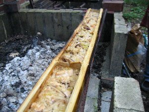
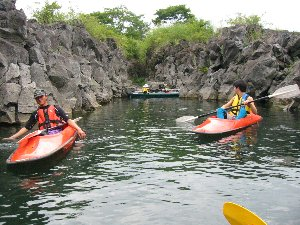
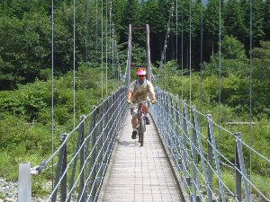
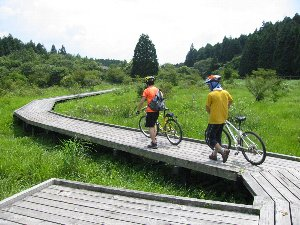
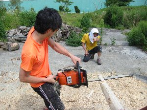

本栖湖カヌー＆朝霧ＭＴＢ | 2005年8月 |
|---|---|
| まーしー一家が、夏休みを朝霧の別宅で過ごすから、暇なら来てね！と誘われれば、自然と戯れたい我々が行かない理由が無い。 人数がある程度集まったので、急きょ本栖湖に貸し別荘まで借りて、本格的に遊びつくすことに決定！ 土曜日の朝9時に、「道の駅朝霧」に集合した我々は、そこで高級（我々にとっては高級）な肉類を買出し、本栖湖へＧＯ！ 貸し別荘（ログハウス）で待っていたまーしー達と合流。早々と昼飯の支度に入る。既に遊びつくし計画はココからスタートしていたのだ。 今回のお昼は「竹筒おこわ」にチャレンジ！ つまり竹筒の中にご飯を入れ、それで炊いてみよう〜って事です。まず、１ｍ位の竹を1/3になるくらいに縦に割る。中を洗い、おこわと水を入れ、火にかざす。それだけ。 って、文章で書くと「なんだ、簡単ジャン！」と言われそうだが、決してそうではありません。ここからが大変なんです。強力な火にかざし30分位たって、確認のため蓋（1/3の竹）を取って見ても、中には沸騰すらしていないおこわの元が・・・・竹が厚いからか？ 火が弱いのか？ 蓋が密閉されていないからか？ 火力をさらに強めたら、竹筒の下部がメラメラと燃え始めた。それでも中は水をたたえている状態。 | |
 まず、斧で竹を1/3に縦割りします |  中にご飯と具を入れ火にかけます |
| それならばと、炭に直置き。竹筒を持ち上げるのさえ困難な状態になり、蓋の部分の竹が収縮し、合いが悪くなってきた。合計１時間位炊いただろうか。ようやく表面が「美味しそう〜」状態になり、早速みんなで突いてみる。スプーンを入れると、約１cmの所でガチッっと硬い音がして突けない！ 表面をそぎ取るように食べると、下から固まったご飯が出てきました。無理やり突いていると穴が開き、焼け落ちた竹があらわになったのです。半分焦げてる〜〜〜 でも、上半分は美味しいからいいか・・・・ お腹が一杯になって気持ちよくなると昼寝をしたくなりますが、ここはちょいと我慢してカヌーをしに出発です。 本日は精進湖へ。まーしーが「面白いものが見えるかも」と言うので、ちょっと期待。 | |
|  一応・・・完成！！ |  精進湖奥まった所 |
| 自分のカヌーを組立て、合計４艇に分乗し、釣り人で賑わう精進湖に繰り出します。富士山が見える穏やかな湖面を、突き進むのは気持ちが良いです。対岸の岩場で付近で、まーしーが何やら湖の中を覗き込んでいます。何かを探しているようです。 岩場と岩場の間を縫って奥のほうに進んで行き、かむいさんが一人岩場に上陸し、新大陸を発見したコロンブスの気分に浸っているとき、ついにそれは発見されました。蛙の卵です。結局私は見てないんですけどね。こんな湖にも蛙って居るんですね〜〜田んぼだけかと思ってました。 夕方になり、貸し別荘まで引き上げて、夕食を食べ就寝。カキ氷美味しかった〜(夕飯前にいづみさん、珍くん帰宅。楽しい夕食後、かむいさん帰宅） | |
 コレがゴムのカヌーです |  無人島に上陸し、征服感に浸る・・・ |
| よく日曜。天気快晴。本日は朝霧でマウンテンバイクに乗るため、起きたら直ぐに出発。北海道旅行から帰りがけに立ち寄ったsugarと合流するべく「道の駅朝霧」へ。彼は夜通し北海道から走ってきたんだと。仮眠はしたらしいけど。 ピックアップ用の車を田貫湖において、まーしー別宅へ。そこに我々の車を置き、自転車で出発！ 東海道自然遊歩道（かな？）を入っていきます。遊歩道ですから 車が通れるような広さも、舗装もなされていません。当然ですが。走り始めて早々に吊り橋の登場です。ここを一台一台渡って行きます。揺れはしないけど、楽しいです♪ 自転車で吊り橋って、あんまり無いですよね。 今回のコースは全般的に下りで、あまり漕がなくていいので楽チンです。未舗装路を走っていく爽快感はたまりません。途中で「陣馬の滝」という水場で休憩。きれいな富士山雪解け水を頂く。タンクで持って帰る人多数居ました。水遊びをしている子供たちが気持ち良さそうです。 一時間ぐらい走ったら、既にゴール間直の「湿原」に到着。自転車を降りて、トンボを眺めながらゆっくり歩きます。その後、田貫湖を一周したらカキ氷を食べて終了〜〜♪ 楽しいツーリングでした。 | |
|  吊り橋の上を・・ |  湿原の遊歩道なので押して行き、景色堪能 |
| まーしー別宅に帰る前に、山村レイコさんが経営する喫茶店でお茶でも飲もう。と言う事になり、喫茶「フェアリーテール」へ。ゆっくりお茶でも・・・と思っていたのですが、着いた早々「なに？手伝いに来てくれたの！」 ・・・え？ 山村レイコさん宅では、馬の柵を大勢で製作の真っ只中なのでした！ 直径15センチ位の丸太の皮を落とし、適当な長さに切って、打ち込みやすくするため先を尖らせる。レイコさん関係のためか手伝っている多くは女性。そんな中、フラフラと男性数名がやってきたので、カモに見えたのかも知れません。 早速チェーンソウの扱い方を教えて頂き、丸太を切る羽目になりました。切って先を尖らせる。この作業の担当なのですが、この先を尖らせるが中々上手くいきません。丸太の先端中心に斜めに切り込んで行きたいのに、深すぎて大きく切ってしまったりと、チェーンソウを思うように扱いきれていないのです。キッカーがキャディーよろしく、チェーンソウの角度指示を出し始め、お腹がすきながらも（昼飯がまだだったんだよね）楽しく働いていました。役に立ったかどうかはわかりませんが。かなり鉛筆のように尖った杭を見ると、大丈夫？と思ったりして。 一仕事終わって、飲み物とパンを頂き帰路につきました。 朝霧はスモール北海道って気がしますね。牧場があり、皆が自然と生きていこうって気がします。とっても楽しい所です♪ | |
 なぜか丸太をチェーンソウで切る羽目に・・ |  横でキャディーさんが指示を出す |
| コメント＆写真 ｂｙ べっしー | |